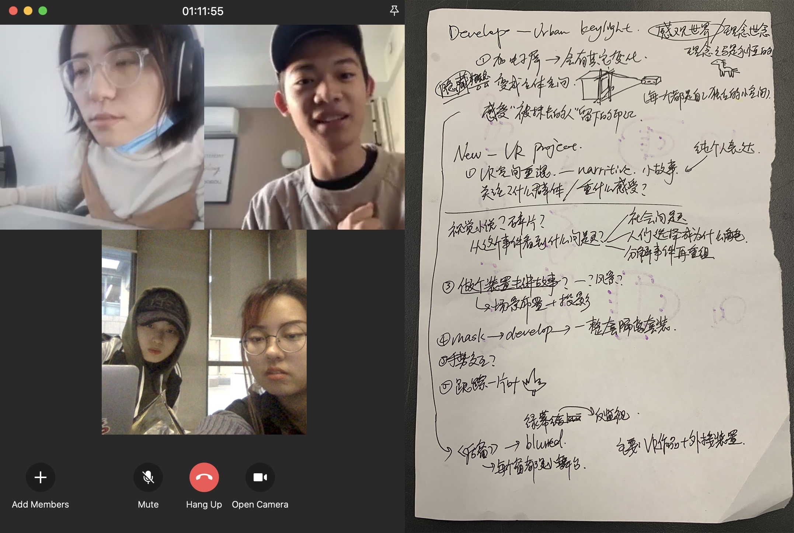

Today I discussed and brainstormed the concepts of our final projects with Sarita, Bowin and Bihan. Thank you guys for all the feedback on my work and the ideas for the following five concepts!
Actually I'm not sure whether my final project would actually born from these five concepts. If so, I'm also curious about which one would be chosen cause I love those ideas equally. I may need more time to further think about all the options. (Quite opposite from my attitude towards my short-term work, I‘m really stubborn in determining the main core of my work when working on long-term projects.)
I left the draft paper that recorded our conversation in the classroom, gonna post the picture of it later...

Continuing the concept of Urban Keylight in 7-in-7, to present the idea that things that are erased also have the value which should be memorized. I want to make the audience truly feel the contributions made by these workers and increase empathy for the low-income marginalized groups in our society.
To further improve this work, I’m going to build an art installation with the props obtained on the construction site, and project the video on the installation with projectors. The video content includes real shots, pictures and some montages.I haven’t done anything related to VR in my 7 in 7, but VR is actually a very important area I would like to explore in my MFA study. As longer time allowed for the final project, I would like to create something in the form of VR.
VR plan 1 : A narrative story
VR plan 2 : Spatial Remixing
As I said before, I will probably develop this project for fun:) To create Distance Keeper Deluxe Edition, I will continue to design a series of so-called wearables around the theme of “contactless”. I will also create a brand for these ridiculous designs and try to actually sell my products in real life.
This is the concept that I would like to practice for a long time. I am easily attracted to some interesting points in daily life. As a creator, I think it is necessary to collect these moments. I want to record these moments in the form of 3D scanned models, image and video, then input them into a digital scene, a museum or an exhibition area built by Unreal Engine through the purpose of storing my inspirational moments.
The digital exhibition area reference
This can be a very long-term work, I’m not sure if it is suitable for finishing this semester's final project, it is too personal as well. However, this work may become a source of inspiration for the future me. In addition, this collection is very likely to become the scene reference for my future games.
I often feel that when doing long-term creations, I should create works that match the maximum volume. Therefore, some “lighter” ideas usually got abandoned in my long-term creation. I have doubts about how to weigh the time and the level of work.
Should I continue to challenge areas that I don't understand so well? Or should I continue to work in the field which I’m maturer?